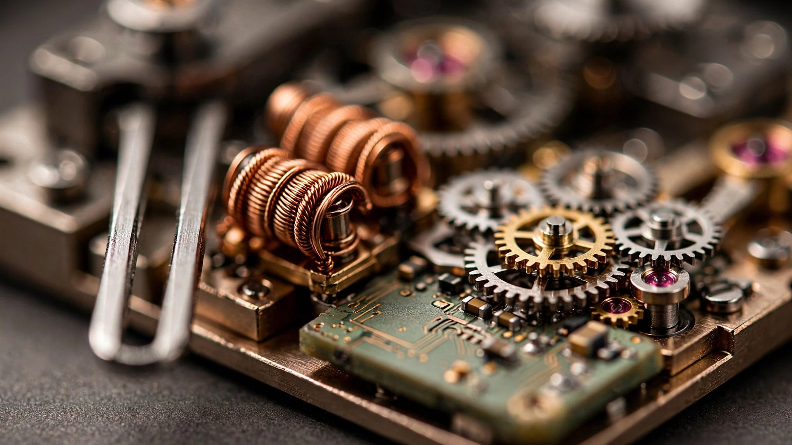

360 Hertz, Three Components, and the Smallest Gear Teeth in Watchmaking: Inside the Accutron Spaceview 314
In 1960, Bulova shipped a wristwatch that replaced the balance wheel with a vibrating metal fork, ran on a transistor circuit containing exactly three electronic components, and achieved an accuracy that made every mechanical watch on Earth look like a sundial in a thunderstorm. Then quartz killed it. The manufacturing knowledge evaporated. The one technician who knew how to fabricate the critical index jewels died. The custom gear-hobbing lathe was destroyed when Bulova changed ownership. Now, after a decade of reconstruction at Citizen's laboratories in Tokyo, the tuning fork is back.

An Electromagnetic Oscillator, Not a Balance Wheel
Every timepiece contains an oscillator. Pendulum clocks swing a weight. Mechanical watches rock a balance wheel and hairspring back and forth at frequencies between 2.5 and 5 Hz. Quartz watches vibrate a crystal at 32,768 Hz. Each oscillator defines how finely the watch can slice a second, and each carries its own engineering tradeoffs between accuracy, power consumption, and mechanical complexity.
The Accutron sits in a strange middle ground that exists almost nowhere else in commercial horology. Its oscillator is a tuning fork: two parallel metal tines fixed at their base and free to vibrate at their tips, sustained in continuous motion by an electromagnetic circuit. Frequency: 360 Hz. Audible output: the note F-sharp above middle C, a distinctive hum that earned the original the slogan "the watch that hums." This is not marketing fluff. You can hear it. Hold an Accutron to your ear and it produces a clean, continuous tone rather than the tick-tick-tick of a mechanical escapement or the utter silence of a quartz crystal.
Why 360 Hz? Because 360 divides evenly into 60. That arithmetic convenience simplifies the gear train that converts vibrations into hand rotation. A mechanical watch beating at 4 Hz needs 28,800 half-oscillations per hour to advance the second hand in discrete steps. A quartz watch at 32,768 Hz divides electronically. A tuning fork at 360 Hz occupies a frequency high enough to produce excellent accuracy but low enough to drive a mechanical gear train directly, without the integrated circuits that quartz movements require. It is an electromechanical hybrid in the most literal sense: electromagnetic drive, mechanical transmission.
How Three Components Keep Time
Strip away the case, the dial (or rather, the absence of dial), the hands, and the gear train. What remains is an electronic circuit of almost absurd simplicity. One transistor. One resistor. One capacitor. That is the entire timing and drive circuit for the original Accutron 214, and the principle carries forward into the Spaceview 314 with modern materials but the same functional architecture.
At the tips of each tuning fork tine sit small cups containing permanent magnets. Surrounding these cups, fixed to the movement plate rather than moving with the fork, are copper wire-wound driving coils. Each coil contains approximately 8,000 turns of wire just 15 microns thick. Unwound, each coil's wire stretches to nearly 80 meters. When current passes through the coils, the resulting magnetic field interacts with the permanent magnets and drives the tines apart. Release the current and the tines spring back under their own elasticity. Apply current again at the right moment, and the fork maintains its 360 Hz vibration indefinitely.
Timing that "right moment" is the clever part. One of the driving coils doubles as a feedback sensor. As the left tine vibrates past its associated coil, the moving magnet induces a small voltage in the coil winding. This voltage peaks when the tine passes through its neutral point at maximum velocity. The feedback signal triggers the transistor, which acts as a switch, releasing current from the capacitor (kept charged by the battery) into the drive coils at precisely the correct phase. Drive. Sense. Switch. Repeat. 360 times per second, with no microprocessor, no crystal oscillator, no software.
This feedback loop is inherently self-correcting. If an external shock increases the amplitude of vibration, the induced feedback voltage rises correspondingly, which generates a current in the drive coils that opposes the transistor's drive pulse, automatically reducing amplitude back to the designed level. An impact that would knock a mechanical balance wheel into chaotic oscillation is absorbed and corrected within a single vibration cycle. Swiss engineer Max Hetzel, who developed this circuit between 1953 and 1960, built stability into the physics rather than compensating for instability after the fact.
Gears Smaller Than Perception
Converting 360 vibrations per second into rotation requires the index wheel, which remains the single most astonishing component in any Accutron. On the original Caliber 214, this wheel measured 2.4 mm in diameter with 300 teeth, each just 10 microns tall. For scale: a human hair is roughly 70 microns wide. Seven of these gear teeth could hide behind a single strand of hair.
An index finger, made from balance spring alloy for its dimensional stability across temperature extremes, extends from the right tine of the tuning fork. At its tip sits an index jewel, originally cut from synthetic ruby and measuring 0.018 mm square by 0.06 mm thick. As the tine vibrates, this jewel pushes against the index wheel's teeth one at a time, advancing it through 300 clicks per second. A second component, the pawl finger with its own jewel, rests against the teeth from the opposite side to prevent backward rotation, creating what watchmakers call "draw" against each tooth. In one year of continuous operation, the index wheel completes approximately 38 million revolutions.
Servicing these components required a 20x to 30x microscope. They are invisible even through a high-power loupe. Adjusting the depth and angle of the index and pawl jewels against the teeth demanded steady hands operating at tolerances that made traditional watchmaking look coarse by comparison. Bulova supplied authorized repair centers with custom microscopes, specialized voltmeters for circuit diagnosis, and dedicated movement holders. The firm recommended that anyone attempting service on an Accutron should consider themselves warned: touching the index wheel teeth with tweezers would destroy them.
Why the Technology Disappeared
Quartz killed the tuning fork. Not because quartz was better in every dimension, but because it was better enough in accuracy and vastly simpler to manufacture. A quartz crystal oscillating at 32,768 Hz and paired with an integrated circuit could be mass-produced on semiconductor fabrication lines. A tuning fork at 360 Hz with hand-assembled microscopic jewels and custom-hobbed gear wheels could not.
Bulova produced Accutron tuning fork watches from 1960 through the late 1970s, selling well over a million units across dozens of references. Omega licensed the technology for its f300 line. Citizen manufactured movements under license at the Bulova Citizen Company in Tokyo. At its peak, the Accutron powered instruments on the Telstar communications satellite, kept time for X-15 rocket plane pilots and CIA A-12 reconnaissance crews, and was selected for the New York World's Fair time capsule in 1964 as one of the most innovative objects of the preceding quarter century.
Then it all stopped. The last tuning fork Accutrons left production around 1977. When Stelux, a Hong Kong watch component manufacturer, acquired Bulova in the late 1970s, the Mikron gear-hobbing lathe that had been specially adapted to cut 300-tooth index wheels was destroyed. No documentation of the manufacturing process survived. According to a 1999 interview with Hetzel himself, the sole technician who understood how to fabricate and adjust the index and pawl jewels had died years earlier. An entire manufacturing art vanished within a single decade.
A thousand-piece anniversary edition appeared in 2010 using old-stock components, but genuine revival required reinvention from scratch.
Ten Years to Rebuild What Took Seven to Create
Citizen Group acquired Bulova in 2008 and began the project that would become the Caliber 314 shortly after. Engineers at Citizen's laboratories in Tokyo confronted a paradox: the design principles were well documented, but the manufacturing processes were extinct. Building a tuning fork watch in 2025 was not a matter of reading blueprints. It was a matter of solving every fabrication problem that Bulova's original team had solved between 1953 and 1960, then finding modern equivalents for materials and machines that no longer existed.
Several critical components received material upgrades that improve performance while also solving the manufacturing problem.
The permanent magnets on the tuning fork cups changed from Alnico (an aluminum-nickel-cobalt alloy) to samarium-cobalt, a rare earth magnet material with higher magnetic field strength per unit volume and superior resistance to demagnetization. Both materials maintain stable field strength across temperature variations, a non-negotiable requirement for a timekeeping oscillator, but samarium-cobalt packs more magnetic energy into a smaller package. For a component that must fit inside a vibrating cup on a tuning fork tine, size reduction translates directly into reduced mass, which affects the fork's resonant frequency. Swapping magnet materials meant recalculating the fork dimensions to maintain the 360 Hz target.
The index and pawl jewels changed from synthetic ruby to silicon. This is the most consequential material substitution in the entire project. Silicon components can be fabricated to almost arbitrarily precise dimensions using photolithographic etching processes borrowed from semiconductor manufacturing. Where the original ruby jewels were individually cut, polished, and hand-set by a specialized technician whose skills died with him, silicon jewels can be produced in batches with nanometer-scale dimensional consistency. The manufacturing bottleneck that killed the original Accutron no longer exists.
The index wheel itself grew from 2.4 mm to 3.4 mm in diameter and from 300 to 400 teeth, fabricated in nickel using the LIGA process. LIGA (Lithographie, Galvanoformung, Abformung) is a photolithographic electroforming technique originally developed for micromechanical systems at the Karlsruhe Nuclear Research Center in the 1980s. It produces metal components with near-vertical sidewalls and dimensional tolerances measured in single-digit microns, exactly the characteristics required for gear teeth that must engage with jeweled fingers at 360 cycles per second. Nickel is harder than the beryllium bronze used in the original, which should extend the theoretical lifespan of the engagement surfaces, though Bulova's original service manuals noted that wear was never a practical concern anyway.
Moving the index wheel from the caseback side to the dial side was a deliberate design choice for the Spaceview's open-dial architecture. Now the most mesmerizing component in the watch faces the wearer: a disk smaller than a sesame seed, spinning continuously, its 400 teeth advancing one by one in a blur of motion that never pauses while the battery lives.
Elinvar, NiSpan-C, and the Metallurgy of Stability
A tuning fork's frequency depends on its physical dimensions and the elastic modulus of the material from which it is made. Change the temperature and most metals change their elastic modulus, which changes the frequency, which changes the rate of the watch. This is the same fundamental problem that plagued mechanical watches for centuries before the invention of temperature-compensating balance springs, and it is why the choice of tuning fork material matters enormously.
Hetzel selected NiSpan-C, a nickel-iron-chromium alloy related to the family of temperature-invariant alloys discovered by Swiss-French physicist Charles-Edouard Guillaume, whose work on Invar (near-zero thermal expansion) and Elinvar (near-zero thermal coefficient of elasticity) earned him the 1920 Nobel Prize in Physics. NiSpan-C belongs to this metallurgical lineage. Its coefficient of thermal elasticity is low enough that the 360 Hz frequency remains stable across the operating range of 20 to 120 degrees Fahrenheit, a window that encompasses everything from a refrigerated environment to a cockpit baking in equatorial sun.
For the Caliber 314, Accutron describes the tuning fork material as incorporating both silicon and Elinvar. Whether this means a new alloy composition, a surface treatment, or the use of silicon in auxiliary components (as opposed to the fork tines themselves) remains unspecified in the public documentation. What is clear is that the target is the same as it was in 1960: dimensional and elastic stability across a wide thermal window, so the fork sings its F-sharp regardless of conditions.
What 360 Hz Looks Like on the Wrist
Every mechanical watch's second hand moves in visible steps. At 4 Hz (28,800 vibrations per hour), a high-beat mechanical movement ticks eight times per second. You can see each step clearly. At 5 Hz (36,000 vph), the Grand Seiko Hi-Beat standard, the steps are faster but still perceptible to anyone paying attention. Spring Drive, Grand Seiko's electromagnetic glide-wheel system, achieves a genuinely smooth sweep by eliminating discrete steps entirely, but it does so through an entirely different mechanism than the Accutron.
At 360 Hz, the Accutron's second hand advances 360 times per second. No human eye can resolve individual steps at that rate. The result is a sweep that appears perfectly continuous, indistinguishable from the motion of a clock hand driven by a synchronous motor. Combined with the audible hum of the fork itself, the Spaceview 314 produces a sensory experience available from no other current production watch: a visible mechanism whose motion is too fast to see as discrete steps, accompanied by a sound that is part of the timekeeping rather than a side effect of it.
Accuracy is rated at plus or minus two seconds per day. For context, COSC chronometer certification for mechanical watches requires minus four to plus six seconds per day. A decent quartz watch runs at plus or minus 15 seconds per month. At two seconds per day, the Accutron falls between the two: substantially more accurate than even the best-regulated mechanical watch, substantially less accurate than a modern quartz crystal. It occupies the same no-man's-land it occupied in 1960, outperforming everything mechanical while conceding the ultimate precision race to quartz. Back then, quartz had not arrived to claim the crown. Now, the Accutron occupies its position not because it is the most precise option but because its method of achieving precision is irreplaceable.
The Physical Object
Accutron offers the Spaceview 314 in three case materials: 904L stainless steel (the same austenitic steel Rolex uses for its cases, chosen for corrosion resistance and polish quality), Grade 5 titanium (Ti-6Al-4V, the aerospace standard alloy), and 18-karat yellow gold in a limited run of 65 pieces. Case diameter is 39 mm across all three metals. Thickness varies slightly by material density: 13.4 mm in steel, 13.25 mm in titanium, 13.35 mm in gold.
Case proportions reflect a deliberate restraint that the original 214 never attempted. At 39 mm, the Spaceview 314 hits the size that vintage watch collectors and contemporary wearers have converged on as optimal for a non-sport watch. No date window clutters the open architecture. Straight lugs with an 18 mm lug width accept Italian leather straps with deployant clasps. Water resistance is 30 meters, adequate for handwashing and rain but not swimming, a concession to the open-architecture design and the need for the crown at 4 o'clock to remain accessible.
Every movement is hand-assembled. Finishing includes anglage, perlage, brushing, and Cotes de Geneve striping, visible through the sapphire caseback. The chapter ring carries hour markers and handset coated in LumiNova SG-1000 N. A domed sapphire crystal sits over the dial side, accentuating the three-dimensional depth of the exposed mechanism beneath it.
Production is not limited by edition number but by manufacturing capacity. Each Caliber 314 requires individual assembly and adjustment of components that operate at scales where automated production is impractical. Accutron has not disclosed annual production targets, but the implication is clear: there will be few of these.
Specifications
| Specification | Accutron Spaceview 314 |
|---|---|
| Case diameter | 39 mm (steel, titanium); 37 mm (gold) |
| Case thickness | 13.4 mm (steel); 13.25 mm (titanium); 13.35 mm (gold) |
| Case material | 904L stainless steel, Grade 5 titanium, or 18k yellow gold |
| Crystal | Double-domed sapphire |
| Caseback | Sapphire display |
| Water resistance | 30 m / 3 ATM |
| Movement | Caliber 314 (Y230), tuning fork electromagnetic |
| Frequency | 360 Hz (F-sharp) |
| Accuracy | ±2 seconds/day |
| Jewels | 14 |
| Index wheel | 3.4 mm diameter, 400 teeth, nickel (LIGA process) |
| Index/pawl jewels | Silicon (photolithographic fabrication) |
| Magnets | Samarium-cobalt (upgraded from Alnico) |
| Tuning fork material | Elinvar-family alloy with silicon |
| Power source | Battery (approx. 24-month life) |
| Functions | Hours, minutes, sweep seconds with hack |
| Strap | Italian calf leather, deployant clasp |
| Price | $5,990 (steel); $6,200 (titanium); $31,500 (18k gold) |
| Production | Not limited edition; production-constrained by hand assembly |
| References | 26A211, 26A212 (steel); 26A213 (titanium); 27A206 (gold) |
What Cannot Be Replicated
No other watch manufacturer currently produces a tuning fork movement. Omega's f300 line died in the 1970s alongside the Accutron. Citizen's own Hisonic brand, which produced tuning fork watches under Bulova license, stopped decades ago. Grand Seiko's Spring Drive achieves a smooth sweep through an electromagnetic brake on a mechanical gear train, which is an entirely different engineering approach with entirely different physics. Quartz watches use tuning fork-shaped crystals as oscillators, but these vibrate at 32,768 Hz in a hermetically sealed capsule with no mechanical gear engagement. The principle is related but the execution is unrecognizable.
What makes the Spaceview 314 genuinely unrepeatable in the current market is not its accuracy, which several alternative technologies match or exceed, nor its smooth sweep, which Spring Drive also achieves. It is the specific combination of electromagnetic drive, mechanical transmission, audible frequency, and visible mechanism operating at scales so small they require a microscope to inspect. A transistor triggers a magnetic field that vibrates a metal fork that pushes a jeweled finger against 400 teeth on a wheel smaller than a sesame seed, 360 times every second, producing a sound you can hear and a motion you cannot decompose into individual steps.
Hetzel's original circuit contained three components. The modern version has been updated with a microchip replacing the original capacitor, improving longevity and reliability, but the functional architecture remains the same: sense, switch, drive, repeat. In a world where a modern quartz movement contains dozens of integrated circuit elements and a mechanical watch contains hundreds of components, the Accutron achieves its timekeeping through an electronic circuit that can be fully described in a single paragraph.
Pricing starts at $5,990 for the steel version. For six thousand dollars you get a hand-assembled movement whose manufacturing process took a decade to reconstruct, containing gear teeth too small to see without magnification, driven by an electromagnetic feedback loop designed in the 1950s by a Swiss engineer who understood that the transistor could do for timekeeping what the mainspring had failed to do for three centuries: provide a stable, self-correcting source of oscillation. Whether that represents value depends entirely on how you define the word.